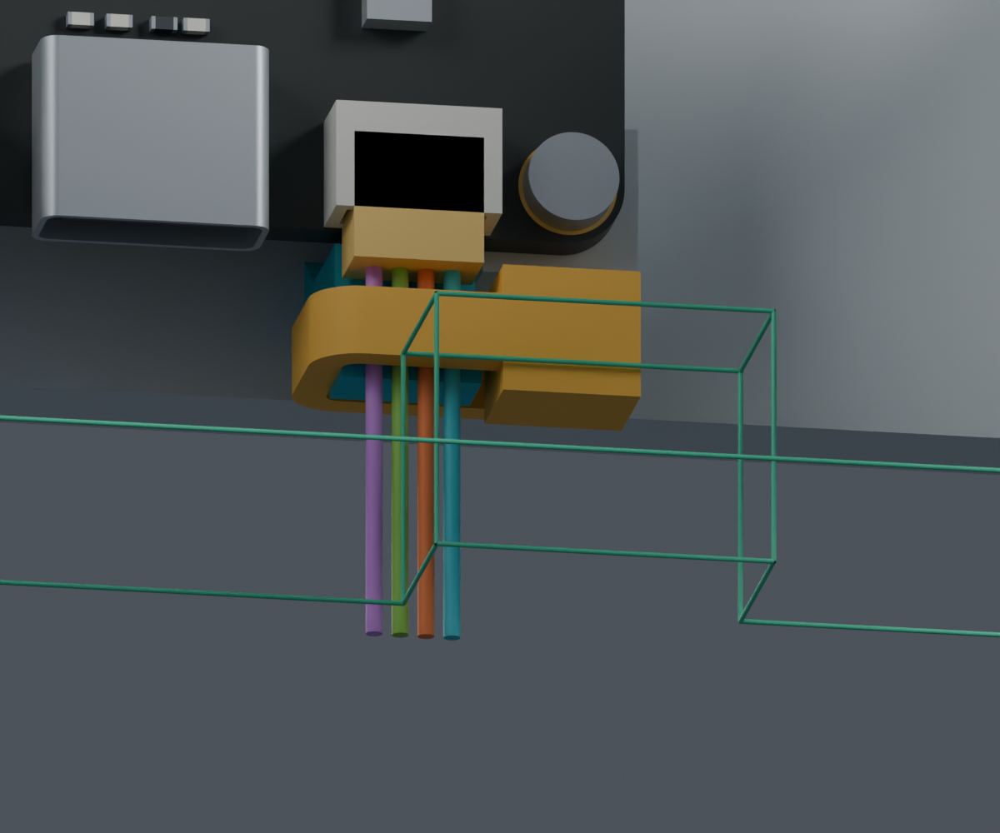
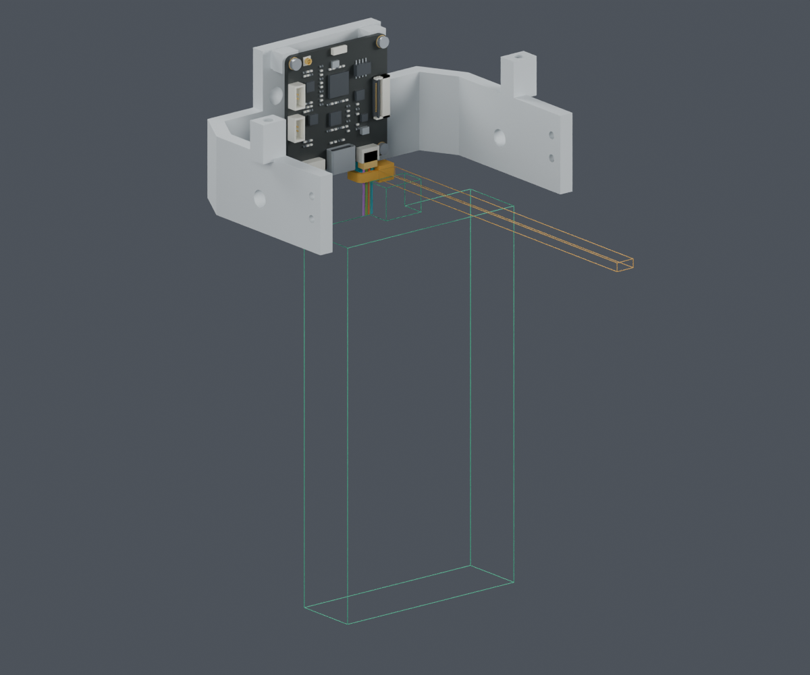
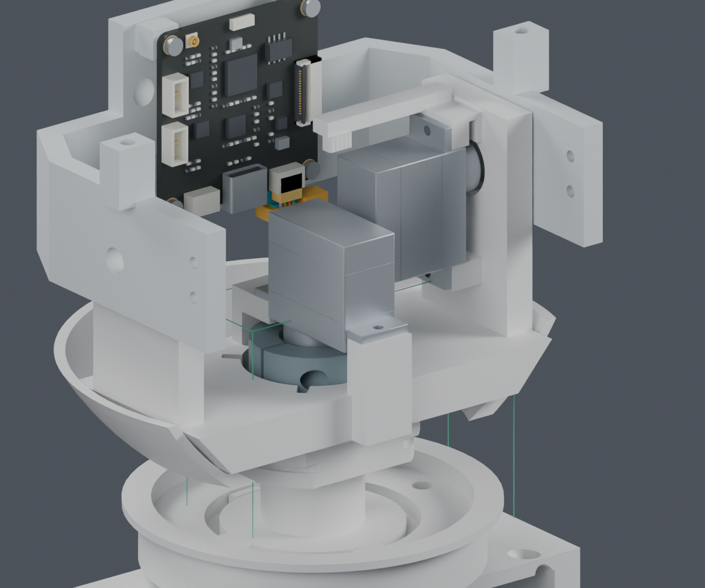

本轮补齐离机剪尾工具空间，并整理四根线的模型路线与夹持基准。没有新增打印结构。
完整线束仍为BLOCKED。主模型M1.47未采用候选；表内路线长度不是裁线长度，整束暂存、装拆及其余头部线路仍需完成。
CAM先插线再上头托。钳子朝下摆放，在离机组件上从下方接近；随后整理俯仰线环。工具连续扫掠与板卡/头托名义间距2.14mm，与局部直线导线1.56mm。


同一工具在机器人上操作会被偏航座等下方结构挡住。离机俯仰组件拆掉头壳后工具有空间，但连接整束线之后如何取下组件，尚未验证。先形成最终线环也会挡住当前工具，因此必须先剪尾。

从Motion J5分配出线面沿既定路线量到CAM分配出线面。G1–G4为几何槽位；CAM实际针腔视图未定，不得按G编号接线。
| 几何线号 | 身体端来源 | 模型全长mm | 至yaw夹持中心mm | 两夹持中心间mm | 裁线长度 |
|---|---|---|---|---|---|
| H06-G1 | Motion J5.1 | 287.3 | 176.9 | 107.75 | 未定 |
| H06-G2 | Motion J5.2 | 327.9 | 217.5 | 107.75 | 未定 |
| H06-G3 | Motion J5.3 | 285.1 | 174.7 | 107.75 | 未定 |
| H06-G4 | Motion J5.4 | 339.6 | 229.3 | 107.75 | 未定 |
CAM夹持中心至出线面约2.60mm。13×10姿态、四根线共520组保存曲线与模型长度差小于0.003mm，只验证数字一致性；不是制造公差或动态弯折资格。
供应商按图制作已经确定。终端基准修正和制造公差尚缺，CSV裁线列留空，不发加工订单。
完整说明与检查边界 · 独立Blender · 操作检查 · 长度基准 · 参考长度表 · 参考路线坐标 · 复现命令 · 交付记录